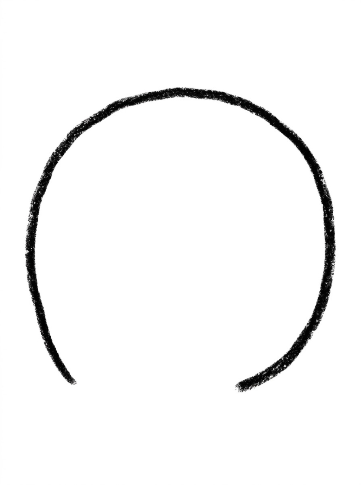
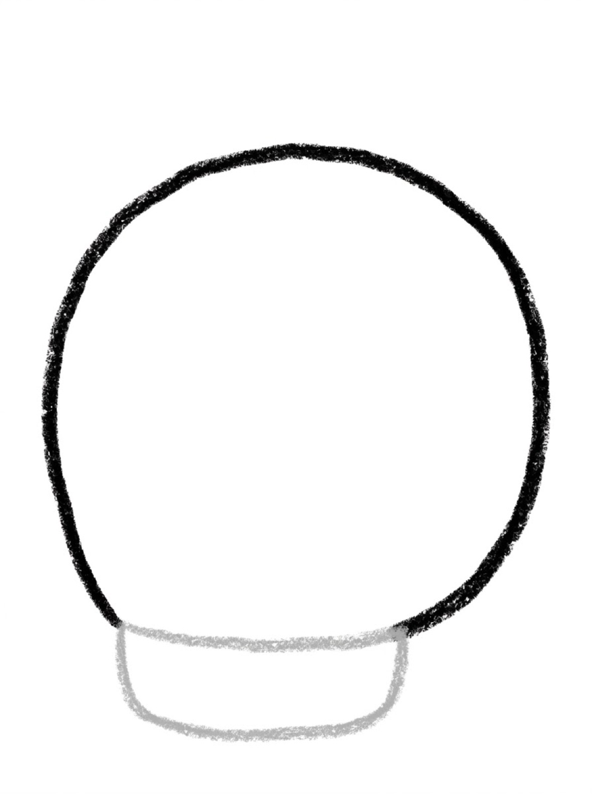
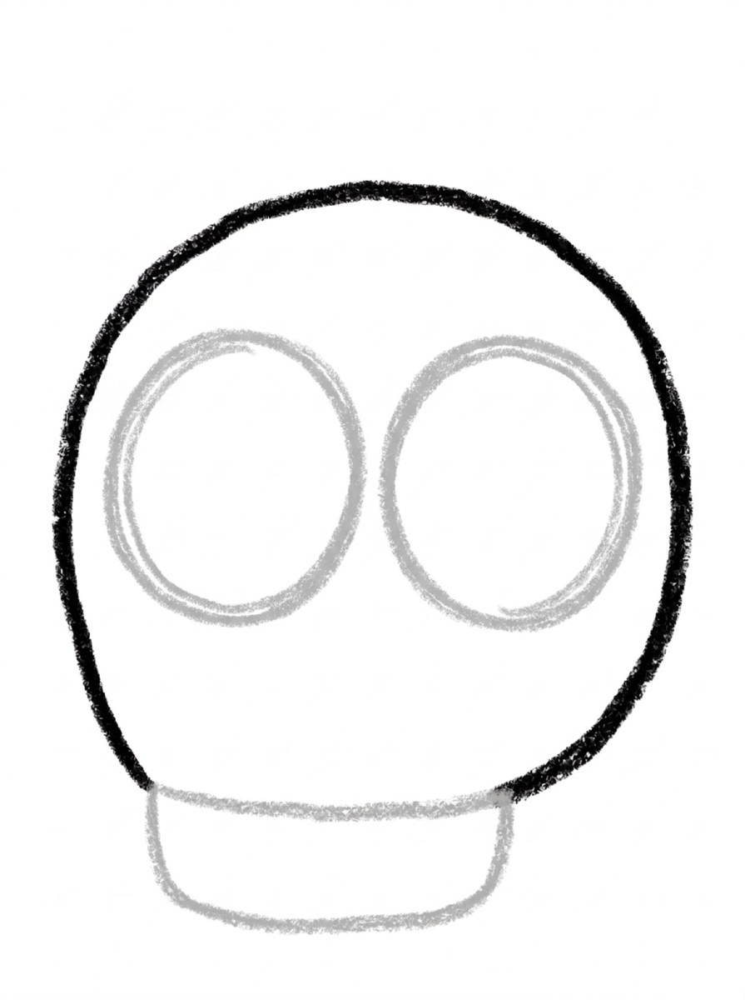
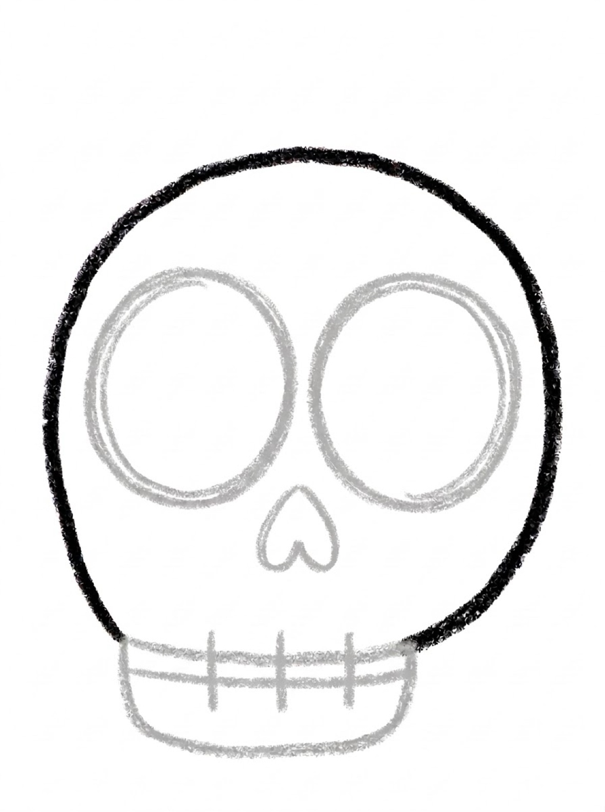
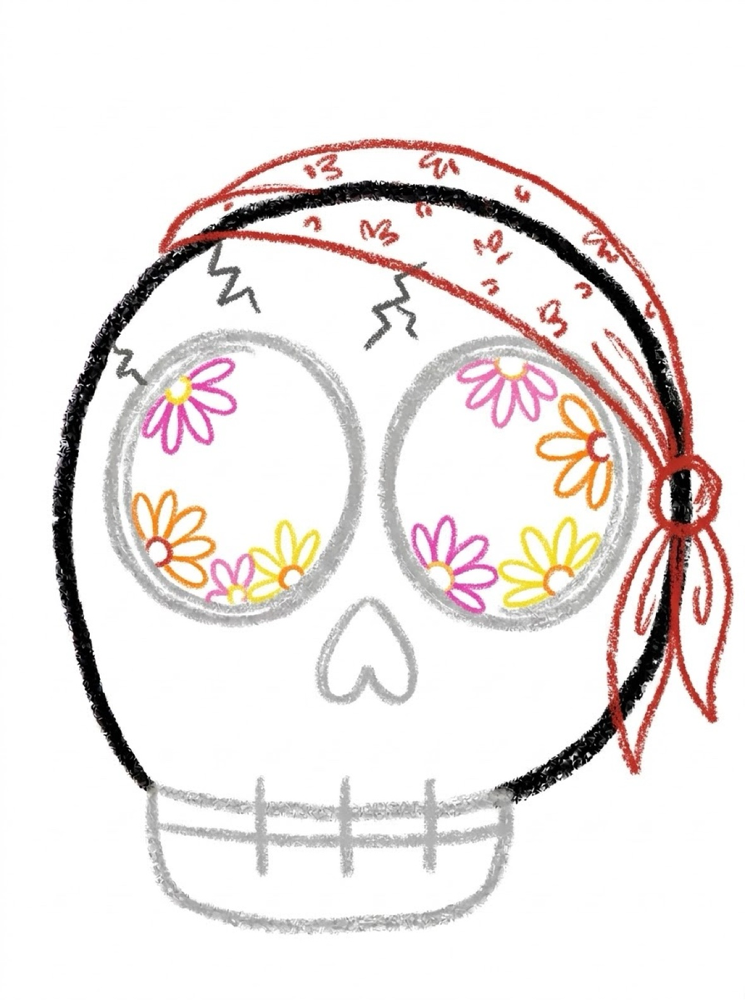

Skull Drawing for Kids How to Draw a Skull in 6 Easy Steps
Quick Answer
This free step-by-step tutorial shows kids how to draw a friendly cartoon skull in six easy steps: a rounded cranium, a jaw, big eye sockets, a nose hole, teeth, and fun details. Download the printable PDF, grab crayons, and follow along together. Made for ages 5 and up — no signup needed, just print and draw.
At a Glance
- Subject: How to draw a skull
- Ages: 6+
- Steps: 6 steps
- Time: ~15 min
- Difficulty: Medium
- Supplies: Paper, crayons
Not a spooky skull — a silly one. Think cartoon pirate flag, not haunted house. Big round eye sockets and a goofy toothy grin make this more funny than frightening, and kids love drawing something that looks 'cool' but is secretly easy.
✏️ How to Draw a Skull: Step by Step
One step per box — draw each new part in a different color so kids can see exactly what changed.
Step 1: The Cranium

Draw a big rounded shape like an upside-down U or a helmet. This is the top of the skull.
Step 2: The Jaw

Draw a smaller rounded rectangle under it for the jaw, like a little chin cup.
Step 3: Eye Sockets

Draw two BIG circles for the eye sockets — the bigger the sillier.
Step 4: The Nose Hole
Draw a small upside-down heart or triangle between and below the eyes for the nose.
Step 5: The Teeth

Draw one straight horizontal line across the middle of the jaw. Then draw 3 short vertical lines crossing it, making square teeth like a little fence.
Step 6: Fun Details

Add cracks, a pirate bandana, or flowers in the eye sockets — then color it your way!
📊 Skull Drawing by Age
Every age can join in — just adjust the job.
| Age | What they can do | Tip |
|---|---|---|
| 3–4 | Trace the cranium and color it in | Keep it silly — call it a 'pirate head' to avoid any scariness |
| 4–5 | Draw the cranium, jaw, and eyes with help | Exaggerate the eye size — big eyes are funnier and easier |
| 6+ | Draw the whole skull solo | Challenge: draw the skull as a pirate, a robot, and a flower vase |
🖨️ Download Your Free Skull Drawing Printable
The printable lays out all 6 steps one per box, big enough for little hands — kids draw right alongside each step.
⬇️ Open Free Printable 🖨️ Print🎁 Free printable for ages 3+
☠️ Silly Skull Dress-Up
Draw the basic skull three times, then give each one a costume — a pirate bandana, a flower crown, a superhero mask. The same six steps become three totally different characters. This is the drawing that proves 'scary' shapes are just shapes.
What You'll Need to Draw a Skull
Black or dark gray for the cranium outline, plus whatever fun colors your kid wants for the decorations — the pirate bandana and flower eyes are the creative part. Crayons work better than markers here since the eye sockets need careful coloring inside the lines. White paper is a must; the skull needs maximum contrast.
What They're Learning
Skulls are secretly great for symmetry practice — the two eye sockets need to match, and kids notice fast when they don't. The upside-down U cranium is a good curved-line exercise, and the teeth grid (horizontal + vertical lines crossing) is early pattern work. It also teaches that ‘scary' things can be cute and fun to draw.
Make It Yours
The step-6 decorations are just a starting point: try a flower crown instead of the bandana, lightning-bolt cracks, or heart-shaped eyes for a Day of the Dead style. Kids can draw a pirate hat on top, add crossbones underneath, or make a whole skeleton family. Glow-in-the-dark crayons make this one extra cool.
🛒 Our Favorite Drawing Supplies
These are the supplies we reach for in our own home — washable (because kids), quality paper, and enough colors to avoid fights.
As an Amazon Associate, MomYouNeedThis earns from qualifying purchases — at no extra cost to you.
💀 Skulls in the Real World
Your skull is a helmet you grow yourself: a case of bone that protects the brain, with holes exactly where they need to be for eyes, ears, nose, and the spinal cord. Babies' skulls are made of separate plates with soft spots between them, which slowly grow together during childhood. The only skull bone that moves is the jaw — every chew and every word you say runs on that one hinge.
Cartoon skulls smile because real skulls show their teeth; a skull's grin is not an expression, it is just anatomy with nothing covering it. Teeth, by the way, are not bones — they are harder and built differently. Ask your child whether their skull is the spooky kind or the silly kind. Around here, we recommend silly.
❓ Skull Drawing FAQs
What is the easiest way for a kid to draw a skull?
Draw a rounded helmet shape for the cranium and a smaller rounded rectangle below for the jaw. Add two big circle eye sockets, a heart-shaped nose hole, and a toothy grin. Keep everything round and goofy — cartoon skulls are all curves.
What age can kids start learning to draw a skull?
Most kids are ready around age 5, when the shapes click and the 'silly not scary' framing lands. Younger kids can trace the cranium and color it in.
What supplies do we need to draw a skull?
Paper and crayons or markers — white and black plus any fun colors for decorating. The free printable PDF lays out all six steps one per box so kids can draw right alongside each step.
Is the skull drawing printable really free?
Yes — every printable on MomYouNeedThis is 100% free to download and print. No signup, no payment, just tap the download button.
How do I print the skull drawing tutorial?
Open the PDF and print at 100% scale (not 'fit to page') so the drawing boxes stay big enough for little hands. The printable is designed to stay large — never shrunk to force a fit.
How does a skull drawing step by step tutorial work?
Each of the six pictures shows the skull so far, with the newest part drawn in a fresh color. Your child copies just the colored part — cranium, then jaw, then the face holes — and checks it before moving on.
📚 Keep Exploring
- ✏️ All 76 Drawing Tutorials 76 free step-by-step drawing tutorials for kids.
- 🐾 Animal Coloring Free printable animal coloring pages for little learners.
- ✏️ Drawing Practice Free printable drawing pre-writing worksheet for toddlers.